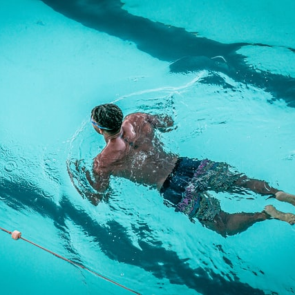
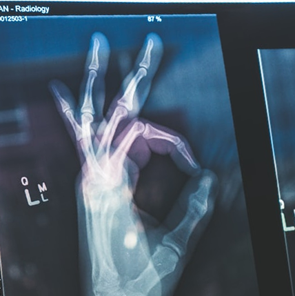
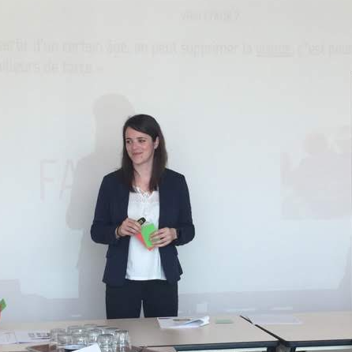

Bienvenue

Muriel Crézé
Diététicienne nutritionniste depuis 2013
 Muriel Crézé
Muriel Crézé
La diététique est un sujet passionnant, qui a le pouvoir
de révolutionner la vie,
et c’est avec grand plaisir que j’accompagne mes patients.
Notre objectif sera d'améliorer votre bien-être, tout en combattant les pathologies éventuelles.
C’est avant tout un moment de partage et d’écoute, à la
recherche des solutions adaptées.
La diététique fonctionne dans un cadre de confiance mutuelle.
Sportif
Soutien du sportif dans son effort
Compétition
Loisir
Performance
Prise de masse
Loisir
Performance
Prise de masse

Bien portant
Amélioration de votre quotidien
Équilibre alimentaire
Perte de poids
Manque d'énergie
Perte de poids
Manque d'énergie
Pathologies
Accompagnement du patient dans son pacours
IRC
Obésité
Diabète
Cancerologie
Obésité
Diabète
Cancerologie

Tarifs
Consultation : 50€
Suivi : 40€
Suivi : 40€
Réductions
Visio : -5€
Couple : -5€ / pers
Etudiants : -10€
Couple : -5€ / pers
Etudiants : -10€
Muriel Crézé
Diététicienne depuis 10 ans
DU nutrition sportive - Paris Descartes
BPS diététique et nutrition du sportif
Formatrice en BTS diététique
Ingénieur pédagogique
...
DU nutrition sportive - Paris Descartes
BPS diététique et nutrition du sportif
Formatrice en BTS diététique
Ingénieur pédagogique
...

Partenaires
Ligue contre le cancer (Proxiligue Nantes)
INTERBEV (Pays de Loire)
Santé service formation (Saint Herblain)
Pôle espoir judo (Nantes)
...
INTERBEV (Pays de Loire)
Santé service formation (Saint Herblain)
Pôle espoir judo (Nantes)
...